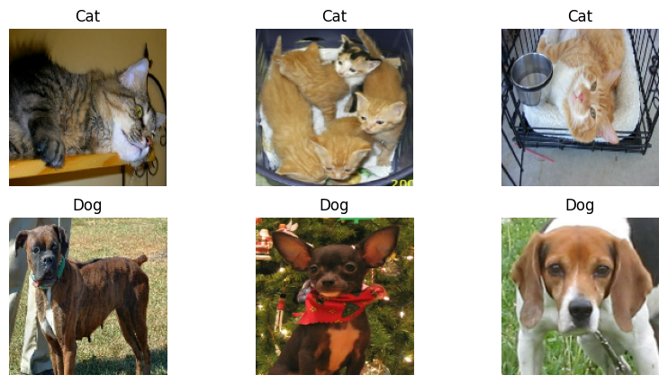
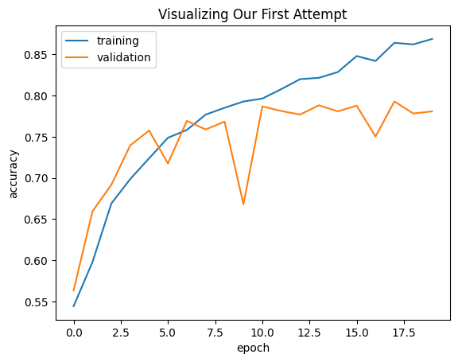
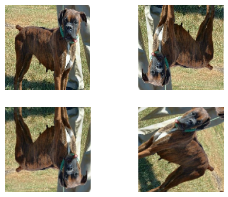
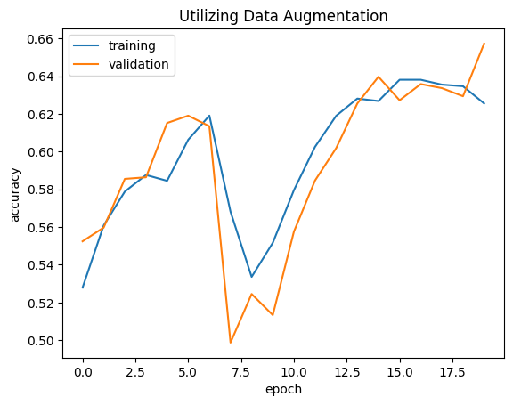
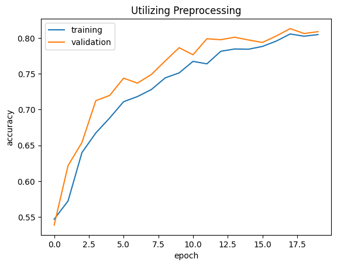
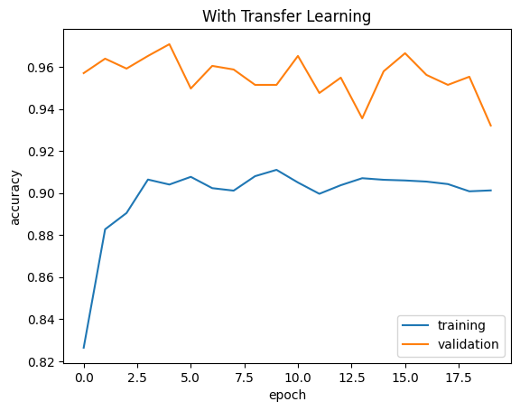

import os
os.environ["KERAS_BACKEND"] = "tensorflow"
import keras
from keras import utils
import tensorflow as tf
import tensorflow_datasets as tfds
import matplotlib.pyplot as plt
import numpy as npIntroduction
Today we’re going to look at image classification and transfer learning using the widely useful keras library in python, with backend tensorflow. To start, you’ll need to import the following:
import keras.layersWorking with a Dataset
We’re going to use the “cats vs dogs” dataset from Kaggle, loading it in through tensorflow datasets (that’s why we imported it above). Let’s look at the datasets details.
train_ds, validation_ds, test_ds = tfds.load(
"cats_vs_dogs",
# 40% for training, 10% for validation, and 10% for test (the rest unused)
split=["train[:40%]", "train[40%:50%]", "train[50%:60%]"],
as_supervised=True, # Include labels
)
print(f"Number of training samples: {train_ds.cardinality()}")
print(f"Number of validation samples: {validation_ds.cardinality()}")
print(f"Number of test samples: {test_ds.cardinality()}")Downloading and preparing dataset 786.67 MiB (download: 786.67 MiB, generated: 1.04 GiB, total: 1.81 GiB) to /root/tensorflow_datasets/cats_vs_dogs/4.0.1...
Dataset cats_vs_dogs downloaded and prepared to /root/tensorflow_datasets/cats_vs_dogs/4.0.1. Subsequent calls will reuse this data.
Number of training samples: 9305
Number of validation samples: 2326
Number of test samples: 2326WARNING:absl:1738 images were corrupted and were skippedRun the code above to download the dataset. As we can see, the data set has around 14,000 images in it, which we split up into images from training, images for validation, and images for testing (a 40/40/10 split). These three datasets are the backbone of today’s project – we’re going to keep coming back to them over and over. As a refresher, lets go over what training, validation, and testing are. As you can probably guess, the training dataset is used to train our model – the idea is that the machine can recognize patterns evident in the training data, and locate them in other pictures to identify what they are. Validation is a sort of test-before-the-actual-test, where we make sure our model is recognizing the appropriate details, and not overfitting to only classify the training data. Finally, the test set is as it sounds – the final test of our model’s ability to classify images.
In the following, we do a little bit more manipulation of the datasets. We use the Resizing() method to make sure all images in the cats vs dogs dataset are the same pixel size, here being 150x150. We then apply this change to the training, validation, and test sets separately. Next, we dig place our data in cache for ease of access when actually running code. This way we don’t take forever to check our model’s accuracy.
resize_fn = keras.layers.Resizing(150, 150)
train_ds = train_ds.map(lambda x, y: (resize_fn(x), y))
validation_ds = validation_ds.map(lambda x, y: (resize_fn(x), y))
test_ds = test_ds.map(lambda x, y: (resize_fn(x), y))from tensorflow import data as tf_data
batch_size = 64
train_ds = train_ds.batch(batch_size).prefetch(tf_data.AUTOTUNE).cache()
validation_ds = validation_ds.batch(batch_size).prefetch(tf_data.AUTOTUNE).cache()
test_ds = test_ds.batch(batch_size).prefetch(tf_data.AUTOTUNE).cache()Next, I made a little visual of the dataset. Using matplotlib, and iterating through the first batch of data in the train dataset (that’s what the take() function is for – take(n) returns us the nth batch of data), we can make two rows of plots, the first with three different photos of cats, the second with three different photos of dogs.
def visualize(dataset):
plt.figure(figsize=(10, 5))
cats = []
dogs = []
for images, labels in dataset.take(1): # iterate through first batch of data in dataset
for i in range(len(labels)):
if labels[i] == 0:
cats.append(images[i].numpy().astype("uint8"))
else:
dogs.append(images[i].numpy().astype("uint8"))
for i in range(3):
ax = plt.subplot(2, 3, i + 1) # first row of plots, for cats
plt.imshow(cats[i])
plt.title('Cat')
plt.axis('off')
ax = plt.subplot(2, 3, i + 4) # second row of plots, for dogs
plt.imshow(dogs[i])
plt.title('Dog')
plt.axis('off')
visualize(train_ds)
This is the final part of our introduction. A baseline machine learning model, in theory, just guesses the majority data class each time. I created an iterator of the train data below, and looped through it to count how many dogs images and how many cat images are in the set. As you can see, dogs slighlty outnumber cats. Thus, we’d expect to see a little over 50% success rate from a baseline model just guessing dog for each image.
labels_iterator= train_ds.unbatch().map(lambda image, label: label).as_numpy_iterator()
dog_count = 0
cat_count = 0
for label in labels_iterator:
if label == 0:
cat_count+= 1
else:
dog_count+= 1
print(f'num cats: {cat_count} num dogs: {dog_count}')num cats: 4637 num dogs: 4668Our First Model
Our first model is going to be pretty simply. In all of these, we utilize keras.Sequential to create a pipeline through which data will flow. Here, we have three convolutional layers, 3 max pooling layers, two dropout layers, one layer to flatten data, and a final dense layer with two outputs – the probability spread of whether or not an image is a dog or cat (not quite, actually – the last layer just gives us raw values, not probabilities, as it turns out we don’t need those yet).
from keras import layers
model1 = keras.models.Sequential([
layers.Input((150, 150, 3)),
layers.Conv2D(150, (5, 5), activation='relu'),
layers.MaxPooling2D((3,3)),
layers.Dropout(0.2),
layers.Conv2D(150, (3,3), activation='relu'),
layers.MaxPooling2D((2,2)),
layers.Dropout(0.2),
layers.Conv2D(256, (3,3), activation='relu'),
layers.MaxPooling2D((2,2)),
layers.Flatten(),
layers.Dense(2)
])The following is the code we use to start the process of training our model. We compile the model using an optimizer called ‘adam’ to perform the technique known as gradient descent: the process in which the model “learns” what weights provide the best prediction. Equally as import is our loss function. Here we use Sparse Categorical Cross Entropy Loss (from the logits, the raw values we get back from the final dense layer in our model). The loss is what we try to minimize when creating a model. Finally, we have our metric to measure the model’s performance – its accuracy when classifying images.
model1.compile(optimizer='adam', loss=keras.losses.SparseCategoricalCrossentropy(from_logits=True), metrics='accuracy')
history = model1.fit(train_ds,
epochs=20,
validation_data=validation_ds)Epoch 1/20
146/146 [==============================] - 23s 151ms/step - loss: 7.8524 - accuracy: 0.5444 - val_loss: 0.6831 - val_accuracy: 0.5636
Epoch 2/20
146/146 [==============================] - 22s 149ms/step - loss: 0.6558 - accuracy: 0.5981 - val_loss: 0.6326 - val_accuracy: 0.6595
Epoch 3/20
146/146 [==============================] - 22s 151ms/step - loss: 0.6084 - accuracy: 0.6690 - val_loss: 0.5845 - val_accuracy: 0.6917
Epoch 4/20
146/146 [==============================] - 22s 150ms/step - loss: 0.5741 - accuracy: 0.6987 - val_loss: 0.5601 - val_accuracy: 0.7395
Epoch 5/20
146/146 [==============================] - 22s 152ms/step - loss: 0.5432 - accuracy: 0.7238 - val_loss: 0.5193 - val_accuracy: 0.7575
Epoch 6/20
146/146 [==============================] - 22s 150ms/step - loss: 0.5098 - accuracy: 0.7487 - val_loss: 0.5509 - val_accuracy: 0.7175
Epoch 7/20
146/146 [==============================] - 22s 149ms/step - loss: 0.4970 - accuracy: 0.7582 - val_loss: 0.4856 - val_accuracy: 0.7691
Epoch 8/20
146/146 [==============================] - 22s 148ms/step - loss: 0.4698 - accuracy: 0.7768 - val_loss: 0.5095 - val_accuracy: 0.7588
Epoch 9/20
146/146 [==============================] - 22s 149ms/step - loss: 0.4495 - accuracy: 0.7851 - val_loss: 0.4877 - val_accuracy: 0.7683
Epoch 10/20
146/146 [==============================] - 22s 152ms/step - loss: 0.4421 - accuracy: 0.7927 - val_loss: 0.6544 - val_accuracy: 0.6681
Epoch 11/20
146/146 [==============================] - 22s 148ms/step - loss: 0.4322 - accuracy: 0.7962 - val_loss: 0.4758 - val_accuracy: 0.7868
Epoch 12/20
146/146 [==============================] - 22s 150ms/step - loss: 0.4095 - accuracy: 0.8076 - val_loss: 0.4950 - val_accuracy: 0.7812
Epoch 13/20
146/146 [==============================] - 22s 150ms/step - loss: 0.3911 - accuracy: 0.8198 - val_loss: 0.4860 - val_accuracy: 0.7769
Epoch 14/20
146/146 [==============================] - 22s 149ms/step - loss: 0.3855 - accuracy: 0.8214 - val_loss: 0.4935 - val_accuracy: 0.7880
Epoch 15/20
146/146 [==============================] - 22s 149ms/step - loss: 0.3726 - accuracy: 0.8284 - val_loss: 0.5129 - val_accuracy: 0.7807
Epoch 16/20
146/146 [==============================] - 22s 148ms/step - loss: 0.3455 - accuracy: 0.8478 - val_loss: 0.4949 - val_accuracy: 0.7876
Epoch 17/20
146/146 [==============================] - 22s 151ms/step - loss: 0.3528 - accuracy: 0.8418 - val_loss: 0.5555 - val_accuracy: 0.7502
Epoch 18/20
146/146 [==============================] - 22s 150ms/step - loss: 0.3214 - accuracy: 0.8638 - val_loss: 0.5148 - val_accuracy: 0.7928
Epoch 19/20
146/146 [==============================] - 22s 151ms/step - loss: 0.3222 - accuracy: 0.8619 - val_loss: 0.5286 - val_accuracy: 0.7782
Epoch 20/20
146/146 [==============================] - 22s 151ms/step - loss: 0.3026 - accuracy: 0.8686 - val_loss: 0.5782 - val_accuracy: 0.7807The following plot showcases the tradeoffs between validation and train accuracy. Validation accuracy flucutates, for the most part, in the 75% to 77% range, with a few outliers. Near the end of the training process, you can observe a widening gap between training and validation accuracy – this is caused by overfitting, the tendency of our model to get too used to the train data (it gets a sort of tunnel vision, and loses valuable information when keying in on patterns that are not global to the dataset). Even with this issue, however, our model still blows the baseline out of the water.
plt.plot(history.history["accuracy"], label = "training")
plt.plot(history.history["val_accuracy"], label = "validation")
plt.gca().set(xlabel = "epoch", ylabel = "accuracy")
plt.legend()
plt.title("Visualizing Our First Attempt")Text(0.5, 1.0, 'Visualizing Our First Attempt')
Utilizing Data Augmentation
Our last model was fine, but I think we can still do better, or at least start the process of getting better with this next approach. Here, we’re going to employ data augmentation, in the form of random flips and rotations, making our model more robust. Below, I wrote some code to create new layers that can be slotted into our keras.Sequential model pipeline. We have flip, which is a layer involving a random flip, and rotation, a layer involving a random rotation. I visualized it in a plot following the code – on the top left we have a picture of a dog, to its right a random flip, and on the bottom row, two random rotations of the image.
flip = tf.keras.layers.RandomFlip()
rotation = tf.keras.layers.RandomRotation(0.5)
for image, _ in train_ds.take(1):
plt.figure(figsize=(10, 5))
first_image = image[0]
for i in range(2):
ax = plt.subplot(2, 3, i + 1) # First row, with original image and flipped image
augmented_image = flip(tf.expand_dims(first_image, 0))
plt.imshow(augmented_image[0] / 255)
plt.axis('off')
ax = plt.subplot(2, 3, i + 4) # Second row, with two randomly rotated versions of the original image
augmented_image = rotation(tf.expand_dims(first_image, 0))
plt.imshow(augmented_image[0] / 255)
plt.axis('off')
Next, we put these layers into our model pipeline. Keep them at the top, so the changes to the images are taken into account by every layer. Model 2 is the exact same as Model 1, just with the added flip and rotation layers.
flip = tf.keras.layers.RandomFlip()
rotation = tf.keras.layers.RandomRotation(0.2)
model2 = keras.models.Sequential([
layers.Input((150, 150, 3)),
flip,
rotation,
layers.Conv2D(150, (5,5), activation='relu'),
layers.MaxPooling2D((3,3)),
layers.Dropout(0.2),
layers.Conv2D(150, (3,3), activation='relu'),
layers.MaxPooling2D((2,2)),
layers.Dropout(0.2),
layers.Conv2D(256, (3,3), activation='relu'),
layers.MaxPooling2D((2,2)),
layers.Flatten(),
layers.Dense(2)
])We use the same parameters in training Model 2.
model2.compile(optimizer='adam', loss=keras.losses.SparseCategoricalCrossentropy(from_logits=True), metrics='accuracy')
history = model2.fit(train_ds,
epochs=20,
validation_data=validation_ds)Epoch 1/20
146/146 [==============================] - 25s 154ms/step - loss: 5.9194 - accuracy: 0.5279 - val_loss: 0.6839 - val_accuracy: 0.5525
Epoch 2/20
146/146 [==============================] - 22s 153ms/step - loss: 0.6839 - accuracy: 0.5609 - val_loss: 0.6836 - val_accuracy: 0.5598
Epoch 3/20
146/146 [==============================] - 23s 154ms/step - loss: 0.6760 - accuracy: 0.5788 - val_loss: 0.6816 - val_accuracy: 0.5856
Epoch 4/20
146/146 [==============================] - 22s 152ms/step - loss: 0.6708 - accuracy: 0.5876 - val_loss: 0.6782 - val_accuracy: 0.5864
Epoch 5/20
146/146 [==============================] - 22s 152ms/step - loss: 0.6727 - accuracy: 0.5845 - val_loss: 0.6612 - val_accuracy: 0.6152
Epoch 6/20
146/146 [==============================] - 22s 152ms/step - loss: 0.6618 - accuracy: 0.6063 - val_loss: 0.6555 - val_accuracy: 0.6191
Epoch 7/20
146/146 [==============================] - 22s 153ms/step - loss: 0.6572 - accuracy: 0.6191 - val_loss: 0.6541 - val_accuracy: 0.6135
Epoch 8/20
146/146 [==============================] - 22s 153ms/step - loss: 0.6736 - accuracy: 0.5682 - val_loss: 0.6914 - val_accuracy: 0.4987
Epoch 9/20
146/146 [==============================] - 22s 151ms/step - loss: 0.6867 - accuracy: 0.5336 - val_loss: 0.6898 - val_accuracy: 0.5245
Epoch 10/20
146/146 [==============================] - 22s 153ms/step - loss: 0.6843 - accuracy: 0.5516 - val_loss: 0.6900 - val_accuracy: 0.5133
Epoch 11/20
146/146 [==============================] - 24s 163ms/step - loss: 0.6751 - accuracy: 0.5796 - val_loss: 0.6794 - val_accuracy: 0.5576
Epoch 12/20
146/146 [==============================] - 22s 153ms/step - loss: 0.6630 - accuracy: 0.6026 - val_loss: 0.6661 - val_accuracy: 0.5847
Epoch 13/20
146/146 [==============================] - 22s 154ms/step - loss: 0.6562 - accuracy: 0.6190 - val_loss: 0.6547 - val_accuracy: 0.6019
Epoch 14/20
146/146 [==============================] - 22s 153ms/step - loss: 0.6504 - accuracy: 0.6282 - val_loss: 0.6582 - val_accuracy: 0.6255
Epoch 15/20
146/146 [==============================] - 23s 154ms/step - loss: 0.6521 - accuracy: 0.6269 - val_loss: 0.6476 - val_accuracy: 0.6397
Epoch 16/20
146/146 [==============================] - 22s 153ms/step - loss: 0.6399 - accuracy: 0.6382 - val_loss: 0.6473 - val_accuracy: 0.6273
Epoch 17/20
146/146 [==============================] - 23s 160ms/step - loss: 0.6419 - accuracy: 0.6382 - val_loss: 0.6444 - val_accuracy: 0.6359
Epoch 18/20
146/146 [==============================] - 22s 151ms/step - loss: 0.6447 - accuracy: 0.6356 - val_loss: 0.6365 - val_accuracy: 0.6337
Epoch 19/20
146/146 [==============================] - 22s 153ms/step - loss: 0.6478 - accuracy: 0.6347 - val_loss: 0.6469 - val_accuracy: 0.6294
Epoch 20/20
146/146 [==============================] - 22s 153ms/step - loss: 0.6501 - accuracy: 0.6256 - val_loss: 0.6266 - val_accuracy: 0.6574So Model 2 doesn’t perform as well as Model 1. Why? Well it seems to me as if the model requires a larger training period. There is really no overfitting, but the model doesn’t quite have enough time to adjust to the changes pushed by the data augmentation. If it had more time in the oven, I have no doubt it would continue to perform well. Still, it may not have done better than Model 1. Overall, the validation accuracy of Model 2 was kind of all over the place – while it made it past 60% in the end, there was a portion of time where it dipped below 50% before regaining form.
plt.plot(history.history["accuracy"], label = "training")
plt.plot(history.history["val_accuracy"], label = "validation")
plt.gca().set(xlabel = "epoch", ylabel = "accuracy")
plt.legend()
plt.title("Utilizing Data Augmentation")Text(0.5, 1.0, 'Utilizing Data Augmentation')
With Preprocessing
Sometimes it helps to modify the data on the pixel level. That’s what we’re doing in this next model. The code before our Sequential pipeline is used to squash the pixel values of the image, reducing it from the usual 0 to 255 you see most of time. This will helpe standardize the images, helping the classification process.
i = keras.Input(shape=(150, 150, 3))
# The pixel values have the range of (0, 255), but many models will work better if rescaled to (-1, 1.)
# outputs: `(inputs * scale) + offset`
scale_layer = keras.layers.Rescaling(scale=1 / 127.5, offset=-1)
x = scale_layer(i)
preprocessor = keras.Model(inputs = i, outputs = x)
model3 = keras.models.Sequential([
preprocessor,
flip,
rotation,
layers.Conv2D(150, (3,3), activation='relu'),
layers.MaxPooling2D((3,3)),
layers.Dropout(0.2),
layers.Conv2D(150, (3,3), activation='relu'),
layers.MaxPooling2D((2,2)),
layers.Dropout(0.2),
layers.Conv2D(256, (3,3), activation='relu'),
layers.MaxPooling2D((2,2)),
layers.Conv2D(64, (3,3), activation='relu'),
layers.MaxPooling2D((2,2)),
layers.Dropout(0.2),
layers.Conv2D(64, (3,3), activation='relu'),
layers.Flatten(),
layers.Dense(64, activation='relu'),
layers.Dense(2)
])model3.compile(optimizer='adam',
loss=keras.losses.SparseCategoricalCrossentropy(from_logits=True),
metrics='accuracy')
history = model3.fit(train_ds,
epochs=20,
validation_data=validation_ds)Epoch 1/20
146/146 [==============================] - 32s 187ms/step - loss: 0.6872 - accuracy: 0.5468 - val_loss: 0.6856 - val_accuracy: 0.5387
Epoch 2/20
146/146 [==============================] - 24s 167ms/step - loss: 0.6741 - accuracy: 0.5723 - val_loss: 0.6423 - val_accuracy: 0.6217
Epoch 3/20
146/146 [==============================] - 24s 163ms/step - loss: 0.6282 - accuracy: 0.6399 - val_loss: 0.6143 - val_accuracy: 0.6539
Epoch 4/20
146/146 [==============================] - 24s 162ms/step - loss: 0.6062 - accuracy: 0.6673 - val_loss: 0.5704 - val_accuracy: 0.7124
Epoch 5/20
146/146 [==============================] - 23s 161ms/step - loss: 0.5860 - accuracy: 0.6882 - val_loss: 0.5466 - val_accuracy: 0.7197
Epoch 6/20
146/146 [==============================] - 23s 161ms/step - loss: 0.5622 - accuracy: 0.7109 - val_loss: 0.5264 - val_accuracy: 0.7438
Epoch 7/20
146/146 [==============================] - 24s 161ms/step - loss: 0.5523 - accuracy: 0.7181 - val_loss: 0.5406 - val_accuracy: 0.7369
Epoch 8/20
146/146 [==============================] - 24s 161ms/step - loss: 0.5345 - accuracy: 0.7279 - val_loss: 0.5188 - val_accuracy: 0.7489
Epoch 9/20
146/146 [==============================] - 24s 162ms/step - loss: 0.5140 - accuracy: 0.7442 - val_loss: 0.4918 - val_accuracy: 0.7678
Epoch 10/20
146/146 [==============================] - 23s 160ms/step - loss: 0.5029 - accuracy: 0.7511 - val_loss: 0.4807 - val_accuracy: 0.7863
Epoch 11/20
146/146 [==============================] - 24s 161ms/step - loss: 0.4909 - accuracy: 0.7672 - val_loss: 0.4810 - val_accuracy: 0.7764
Epoch 12/20
146/146 [==============================] - 23s 161ms/step - loss: 0.4823 - accuracy: 0.7638 - val_loss: 0.4496 - val_accuracy: 0.7988
Epoch 13/20
146/146 [==============================] - 23s 160ms/step - loss: 0.4635 - accuracy: 0.7813 - val_loss: 0.4422 - val_accuracy: 0.7975
Epoch 14/20
146/146 [==============================] - 24s 162ms/step - loss: 0.4594 - accuracy: 0.7845 - val_loss: 0.4322 - val_accuracy: 0.8009
Epoch 15/20
146/146 [==============================] - 23s 160ms/step - loss: 0.4501 - accuracy: 0.7842 - val_loss: 0.4405 - val_accuracy: 0.7971
Epoch 16/20
146/146 [==============================] - 23s 161ms/step - loss: 0.4527 - accuracy: 0.7881 - val_loss: 0.4253 - val_accuracy: 0.7936
Epoch 17/20
146/146 [==============================] - 23s 159ms/step - loss: 0.4369 - accuracy: 0.7956 - val_loss: 0.4206 - val_accuracy: 0.8027
Epoch 18/20
146/146 [==============================] - 23s 161ms/step - loss: 0.4201 - accuracy: 0.8055 - val_loss: 0.4126 - val_accuracy: 0.8130
Epoch 19/20
146/146 [==============================] - 23s 160ms/step - loss: 0.4222 - accuracy: 0.8024 - val_loss: 0.4227 - val_accuracy: 0.8061
Epoch 20/20
146/146 [==============================] - 24s 161ms/step - loss: 0.4193 - accuracy: 0.8046 - val_loss: 0.4058 - val_accuracy: 0.8087Model 3 is the mostly the same as the previous two, with the only new additions being the preprocessing layer noted above, an extra convolution before the flatenning, and some slight kernel adjustments. It shows remarkable improvement over Model 2 in terms of accuracy, and Model 1 because of its lack of major overfitting. Validation accuracy is at 81% at its peak, but with no signs of overfitting and a clear upward (though stagnating) trend, with a larger training period, Model 3 could have soared to levels over 85%.
plt.plot(history.history["accuracy"], label = "training")
plt.plot(history.history["val_accuracy"], label = "validation")
plt.gca().set(xlabel = "epoch", ylabel = "accuracy")
plt.legend()
plt.title("Utilizing Preprocessing")Text(0.5, 1.0, 'Utilizing Preprocessing')
Exploring Transfer Learning
Sometimes, instead of taking the time to train our own model, its easier (and more rewarding) to utilize a pretrained model to help us along the way. At its core, that’s what transfer learning allows us to do. For our penultimate model, Model 4, we utilize the extremely powerful MovileNetV3 CNN architecture as a layer in our pipeline. We follow it up with a global max pool and one dropout layer before passing to a dense layer with two outputs to classify images.
IMG_SHAPE = (150, 150, 3)
base_model = keras.applications.MobileNetV3Large(input_shape=IMG_SHAPE,
include_top=False,
weights='imagenet')
base_model.trainable = False
i = keras.Input(shape=IMG_SHAPE)
x = base_model(i, training = False)
base_model_layer = keras.Model(inputs = i, outputs = x)WARNING:tensorflow:`input_shape` is undefined or non-square, or `rows` is not 224. Weights for input shape (224, 224) will be loaded as the default.Downloading data from https://storage.googleapis.com/tensorflow/keras-applications/mobilenet_v3/weights_mobilenet_v3_large_224_1.0_float_no_top_v2.h5
12683000/12683000 [==============================] - 0s 0us/stepmodel4 = keras.models.Sequential([
flip,
rotation,
base_model_layer,
layers.GlobalMaxPool2D(),
layers.Dropout(0.2),
layers.Dense(2)
])model4.compile(optimizer='adam',
loss=keras.losses.SparseCategoricalCrossentropy(from_logits=True),
metrics='accuracy')
history = model4.fit(train_ds,
epochs=20,
validation_data=validation_ds)Epoch 1/20
146/146 [==============================] - 15s 63ms/step - loss: 1.6207 - accuracy: 0.8264 - val_loss: 0.2941 - val_accuracy: 0.9570
Epoch 2/20
146/146 [==============================] - 6s 42ms/step - loss: 0.9651 - accuracy: 0.8828 - val_loss: 0.2595 - val_accuracy: 0.9639
Epoch 3/20
146/146 [==============================] - 7s 45ms/step - loss: 0.7959 - accuracy: 0.8905 - val_loss: 0.2713 - val_accuracy: 0.9592
Epoch 4/20
146/146 [==============================] - 7s 48ms/step - loss: 0.5745 - accuracy: 0.9064 - val_loss: 0.1897 - val_accuracy: 0.9652
Epoch 5/20
146/146 [==============================] - 7s 48ms/step - loss: 0.5264 - accuracy: 0.9040 - val_loss: 0.1131 - val_accuracy: 0.9708
Epoch 6/20
146/146 [==============================] - 6s 43ms/step - loss: 0.4577 - accuracy: 0.9077 - val_loss: 0.2525 - val_accuracy: 0.9497
Epoch 7/20
146/146 [==============================] - 6s 44ms/step - loss: 0.4424 - accuracy: 0.9023 - val_loss: 0.1890 - val_accuracy: 0.9604
Epoch 8/20
146/146 [==============================] - 7s 45ms/step - loss: 0.4264 - accuracy: 0.9011 - val_loss: 0.1752 - val_accuracy: 0.9587
Epoch 9/20
146/146 [==============================] - 6s 44ms/step - loss: 0.3756 - accuracy: 0.9080 - val_loss: 0.2174 - val_accuracy: 0.9514
Epoch 10/20
146/146 [==============================] - 7s 45ms/step - loss: 0.3204 - accuracy: 0.9110 - val_loss: 0.1821 - val_accuracy: 0.9514
Epoch 11/20
146/146 [==============================] - 7s 46ms/step - loss: 0.3562 - accuracy: 0.9050 - val_loss: 0.1203 - val_accuracy: 0.9652
Epoch 12/20
146/146 [==============================] - 6s 44ms/step - loss: 0.3646 - accuracy: 0.8996 - val_loss: 0.1940 - val_accuracy: 0.9475
Epoch 13/20
146/146 [==============================] - 7s 47ms/step - loss: 0.3423 - accuracy: 0.9037 - val_loss: 0.1437 - val_accuracy: 0.9549
Epoch 14/20
146/146 [==============================] - 7s 46ms/step - loss: 0.3412 - accuracy: 0.9070 - val_loss: 0.2421 - val_accuracy: 0.9355
Epoch 15/20
146/146 [==============================] - 6s 44ms/step - loss: 0.3567 - accuracy: 0.9063 - val_loss: 0.1514 - val_accuracy: 0.9579
Epoch 16/20
146/146 [==============================] - 6s 44ms/step - loss: 0.3247 - accuracy: 0.9060 - val_loss: 0.0995 - val_accuracy: 0.9665
Epoch 17/20
146/146 [==============================] - 7s 46ms/step - loss: 0.3501 - accuracy: 0.9054 - val_loss: 0.1437 - val_accuracy: 0.9561
Epoch 18/20
146/146 [==============================] - 7s 46ms/step - loss: 0.3778 - accuracy: 0.9042 - val_loss: 0.1680 - val_accuracy: 0.9514
Epoch 19/20
146/146 [==============================] - 7s 47ms/step - loss: 0.3688 - accuracy: 0.9008 - val_loss: 0.1687 - val_accuracy: 0.9553
Epoch 20/20
146/146 [==============================] - 7s 46ms/step - loss: 0.3485 - accuracy: 0.9012 - val_loss: 0.2262 - val_accuracy: 0.9321Model 4 is the pinnacle of our work here today. It has none of the drawbacks of Models 1, 2, and 3, and blows them each out of the water in terms of accuracy. The validation accuracy of Model 4 hovers between 94% and 96%, never once dropping below 93%.
plt.plot(history.history["accuracy"], label = "training")
plt.plot(history.history["val_accuracy"], label = "validation")
plt.gca().set(xlabel = "epoch", ylabel = "accuracy")
plt.legend()
plt.title("With Transfer Learning")Text(0.5, 1.0, 'With Transfer Learning')
The Final Test
Let’s see how good Model 4 really is by testing it on the unused test dataset we formed all those sections ago. We can measure test loss and test accuracy using the evaluate() function. Model 4 achieves a 92.3044% accuracy on the test set, a little bit lower than its validation accuracy was while a bit higher than train accuracy.
test_loss, test_accuracy = model4.evaluate(test_ds) # evaluate the model on test_ds
print("Test Loss:", test_loss)
print("Test Accuracy:", test_accuracy)37/37 [==============================] - 3s 75ms/step - loss: 0.3023 - accuracy: 0.9230
Test Loss: 0.3023127019405365
Test Accuracy: 0.9230438470840454